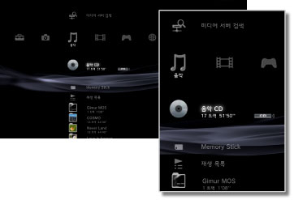

음악 > 음악 카테고리에 대하여
음악 카테고리에 대하여
 (음악)에서는 다음과 같은 아이콘이 표시됩니다. 표시되는 아이콘은 사용 환경에 따라 다릅니다.
(음악)에서는 다음과 같은 아이콘이 표시됩니다. 표시되는 아이콘은 사용 환경에 따라 다릅니다.

 |
（타이틀명） | 미니 제어판을 표시할 수 있습니다. 음악을 재생하고 있을 때만 표시됩니다. |
|---|---|---|
 |
미디어 서버 검색 | 동일한 네트워크에 접속되어 있는 DLNA 서버를 검색할 수 있습니다. |
 |
미디어 서버 | DLNA 서버에 접속하여 저장되어 있는 음악을 재생할 수 있습니다. DLNA 서버에 따라 표시되는 아이콘이 다릅니다. |
 |
(타이틀명) | Super Audio CD를 재생할 수 있습니다. |
 |
(CD 타이틀) | 음악 CD를 재생할 수 있습니다. |
 |
데이터 디스크 | CD-R 또는 DVD-R 등에 저장된 음악 파일을 재생할 수 있습니다. |
|
DSD 디스크 | DVD-R 등에 저장된 DSD 형식의 음악 파일을 재생할 수 있습니다. |
 |
Memory Stick™ | Memory Stick™에 저장된 음악 파일을 재생할 수 있습니다.* |
 |
SD Memory Card | SD Memory Card에 저장된 음악 파일을 재생할 수 있습니다.* |
 |
CompactFlash® | CompactFlash®에 저장된 음악 파일을 재생할 수 있습니다.* |
 |
PSP™（PlayStation®Portable） | PSP™의 Memory Stick™에 저장된 음악 파일을 재생할 수 있습니다. |
 |
PSP™ (PlayStation®Portable） | PSP™go의 본체 메모리에 저장된 음악 파일을 재생할 수 있습니다. |
 |
디지털 카메라 | 디지털 카메라에 저장된 음악 파일을 재생할 수 있습니다. |
 |
WALKMAN®／ATRAC Audio Device（WALKMAN®） | WALKMAN®／ATRAC Audio Device(WALKMAN®)에 저장된 음악 파일을 재생할 수 있습니다. |
| ATRAC Audio Device | ATRAC Audio Device에 저장된 음악 파일을 재생할 수 있습니다. | |
 |
USB 기기 | USB 대용량 저장소 장치에 저장된 음악 파일을 재생할 수 있습니다. |
 |
재생 목록 | 재생 목록을 작성하거나 작성한 재생 목록을 편집/재생할 수 있습니다. |
 |
(폴더) | 기록 미디어에 PC에서 만들어진 폴더가 있을 경우 이 아이콘이 표시됩니다. |
 |
(본체 스토리지에 저장된 파일) | PS3™의 본체 스토리지에 저장된 음악 파일을 재생할 수 있습니다. 이미지 데이터가 있는 경우 섬네일이 표시됩니다. |
| * |
사용하시는 PS3™에 따라서는 기록 미디어를 사용하기 위해 별매의 USB 어댑터가 필요한 경우가 있습니다. USB 어댑터를 사용할 경우 기록 미디어는 |
|---|
 (USB 기기)로 표시됩니다.
(USB 기기)로 표시됩니다.알아두기
- DLNA에 대한 상세한 사항은
 (설정) >
(설정) >  (네트워크 설정) > [미디어 서버 접속]을 참조해 주십시오.
(네트워크 설정) > [미디어 서버 접속]을 참조해 주십시오. - 디스크나 기록 미디어 등의 종류에 따라서는 PS3™에서 올바르게 인식되지 않는 경우가 있습니다.
- Super Audio CD의 음성을 광 디지털 출력 단자에서 출력할 때는 간이 재생(44.1 kHz 16 bit로의 재생)이 됩니다.
중요
Super Audio CD는 일부 PS3™에서는 재생할 수 없습니다. 상세한 사항은 [재생할 수 있는 디스크의 종류에 대하여]를 참조해 주십시오.